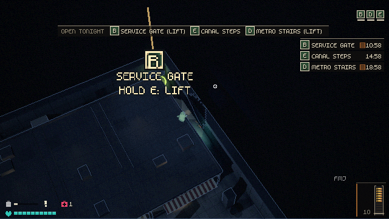
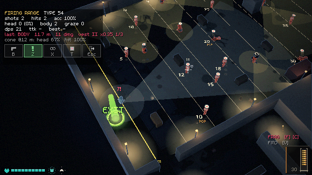
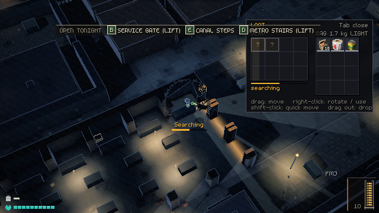
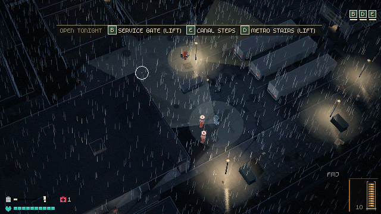

CLOSINGTIMEWINDOWS PLAYTEST · r3
Night-market extraction shooter · build 2026-09-28
The night market is shutting. Slip into the stalls and back alleys, read who is watching, take what is worth taking and get out before the shutters come down.
- Right-click the zip, Extract All (don't run it from inside the zip).
- Open
ClosingTime, double-clickClosingTime.exe. - SmartScreen: More info, then Run anyway (the build isn't signed).
Build 2026-09-28 (tested) commit a571213 58.8 MB SHA-256
Windows 10 or 11, 64-bit. No installer: unzip and run. Mouse and keyboard. The zip also carries the test card as TEST-CARD.txt.
This is a Windows build. Open this page on your PC to play; the test card below reads fine here.
Tonight's test card, 15 items, about 40 minINSTALL
-
UNZIP
Right-click
ClosingTime-win64.zip, Extract All, anywhere (the Desktop is fine).Don't run it from inside the zip: saves and logs need a real folder.
-
SMARTSCREEN
Windows will probably stop it once. The build isn't signed, that's all.
Click More info, then Run anyway. If the firewall asks, allow it (co-op needs it).
-
RUN
Double-click
ClosingTime.exe. The other one,ClosingTime.console.exe, is for crash reports.For the test card's flags: type
powershellin the folder's address bar, then run the copied line.
IN THIS BUILD
Real frames from this build, at the game's own pixel size. Everything since the 27 Sep playtest: gun traits, armour and falloff, the perspective camera, the magazine HUD and enamel exit plates, readable doorways, bigger bodies, the looting fix for co-op and the overnight art.

B2 · EXIT PLATESBone letters on enamel, a sodium shaft, and tonight's exits on a double-tap of O. 
A3 · ARMOURPen against tier, pips, chevrons: guards now take about seven pistol body shots. 
B4 · SEARCHING"?" outlines at each item's real size until the search reaches it. 
B1 · THE MARKETPerspective at FOV 32, rain, and the lamps the scavs stand in.
TEST CARD r3
How to run a line: in the repo, .\run.ps1 ++ <flags>. From the zip, open PowerShell in the unzipped ClosingTime folder (type powershell in Explorer's address bar) and run .\ClosingTime.exe ++ <flags>. The page's copy buttons switch between the two.
How to answer: press Shift+V (or F9) in the game, type or paste a line, Enter; it saves a screenshot and the last 10 s beside your play log, and the orchestrator reads it from there. For the questions, reply in chat by number, like "A3 Tarkov, B1 fine at 32".
Range
10 minKeys at the range: Z walking targets, X infinite ammo, B sandbox gunsmith (nothing saved), T reset, Esc leave. The readout under the chips names every hit.
- A1
Skewer: one round through two bodies
.\ClosingTime.exe ++ --range --loadout=heron --trait=skewer- Line a walking target (Z) up behind a standing one and fire. The tracer turns violet past the first body, with a second spark and a smaller (x0.6) number.
Question: Is the violet closer to Hunt's dragon's breath (you know at once) or Tarkov's tracers (you look for it)?
- A2
Last Coin and Street Converted
.\ClosingTime.exe ++ --range --trait=last_coin.\ClosingTime.exe ++ --range --trait=street_converted.\ClosingTime.exe ++ --range --trait=short_measure,rag_wrapped- Last Coin: empty a magazine; only the last tracer is red, with a bigger number. Street Converted: hold to spray (full auto, climb x1.6). Short Measure: 13 rounds on the magazine HUD and a longer reload.
Question: Is the spray closer to a Tarkov AK on full auto (fight the climb, burst it) or a CoD SMG (hold and hose)?
- A3
Armour: guards are tougher now
.\ClosingTime.exe ++ --range --armour=vest_t2,helmet_t1.\ClosingTime.exe ++ --range --armour=vest_t2,helmet_t1 --loadout=heron- Tap the torso of "Guard kit 12 m": a shield notch on the ring, grey chevrons,
11numbers, the readout'svest II x0.35. Keep tapping until the burst; the next round does 30. - Heron: FMJ is equal (gold arm, x0.6). V picks AP, R reloads, the cartridges gain a third band, and AP goes through.
Question: Guards now take about 7 pistol body shots (were 3). Is that closer to Tarkov (armour decides; bring the right round) or Hunt (a body shot is a body shot)? If it feels spongy, F1 > Armour
guard_vest_max1. - Tap the torso of "Guard kit 12 m": a shield notch on the ring, grey chevrons,
- A4
Falloff
.\ClosingTime.exe ++ --range- Type 54 on the 10, 15 and 25 m lanes. The readout shows
range x0.8past 12 m andx0.65past 20 m.
Question: Are the steps closer to Tarkov (a pistol barely fades) or Hunt (a pistol is a short-range gun)?
- Type 54 on the 10, 15 and 25 m lanes. The readout shows
Raid
15 minOne or two market raids with ++ --raid. F3 lists each scav's kit and traits, F1 is the tuning panel (Copy JSON what you like).
- B1
Camera: perspective at FOV 32
.\ClosingTime.exe ++ --raid.\ClosingTime.exe ++ --raid --fov=25.\ClosingTime.exe ++ --raid --fov=40- Perspective is the default now; F2 flips to orthographic and back. Do tall things and drops read as deep, and can you still see what is behind you?
Question: Closer to The Ascent (things lean, depth reads) or a flat top-down like Zero Sievert?
- B2
Magazine HUD, exit reveal, exit plates
.\ClosingTime.exe ++ --raid.\ClosingTime.exe ++ --raid --loadout=rook- Fire a magazine dry and reload, bottom right: rounds strip, brass bounces, the new mag seats; amber when low, the red follower when empty. The Rook shows the cylinder.
- Double-tap O: tonight's exits and their shutter clocks slide in for 5 s. Walk to an exit: can you read the enamel plate's letter from a screen away?
Question: Is the magazine closer to Hunt: Showdown (you read it by feel) or too busy for a glance?
- B3
Doorways, windows and bodies
.\ClosingTime.exe ++ --raid- Doorways leak a dim warm light, jamb tops glow, lit rooms have warm window caps. Bodies are drawn 1.3x (F1 > Feel
body_scale; 0.8 was the old size).
Question: Are bodies closer to Escape from Duckov (chunky, characters first) or Zero Sievert (small, the map first)? Do guns now look small? (Bigger, visible guns are the guns lane, W2.)
- Doorways leak a dim warm light, jamb tops glow, lit rooms have warm window caps. Bodies are drawn 1.3x (F1 > Feel
- B4
Looting: "?" outlines and bigger cells
.\ClosingTime.exe ++ --raid- Hold E on a container: unsearched items are "?" outlines at their real size, the one being searched pulses gold, then each pops to its icon. Cells are bigger (24 px), with small count chips. Tab for the bag.
Question: Is the search closer to Tarkov (outlines first, suspense) or just slower?
- B5
New art: icons, decals, scav accessories
.\ClosingTime.exe ++ --raid- Rendered item icons everywhere, 20 new grimy decals on floors and walls, 18 new scav accessories (hats, masks, vests, packs). All the overnight art is kept so it can be judged in play; less rust from now on. The 204 catalogue items are not in this build (the items lane wires them in).
Question: Does the market read closer to Disco Elysium's Martinaise (worn but readable) or clutter you look past? Name any single decal or accessory that should go.
- B6
Scav traits and armour, and the death card
.\ClosingTime.exe ++ --raid --scav_trait=skewer.\ClosingTime.exe ++ --raid --scav_trait=last_coin.\ClosingTime.exe ++ --raid --armour=vest_t2,helmet_t1- Every scav carries the trait: a violet through-round, or a red last round against their normal tracer. Wearing armour, get shot: the vest glyph by the heart pops pips. Die once: the card names the trait and says what your vest took.
Question: Is the death card enough to learn from, closer to Hunt's death screen, or do you want a kill-cam?
Co-op
5 minThe looting fix (K1): a friend's search now shows on every machine. In the repo, .\coop.ps1 opens both windows. From the zip, run the two lines below, one per PowerShell window (a host and a friend on this PC; test saves only).
- C1
Searching shows in both windows
.\ClosingTime.exe ++ --host --bind=127.0.0.1 --profile=coop_host --raid.\ClosingTime.exe ++ --join=127.0.0.1 --profile=coop_friend- Hold E on a box in each window. Both windows show the lid rattle, the motes and the searcher's arms in the box; it stops when E is let go or the box is empty. The friend's own rattle starts one round trip late.
Question: Is the search pose closer to ARC Raiders (you can tell who is looting from across a room) or too subtle?
Still unplayed from r1
10 min- D1
The two-floor test building (the gate for multi-storey hubs)
.\ClosingTime.exe ++ --raid --fresh --map=storey_test --spawn=38,18- Shoot the upstairs guard through the window (yellow up arrow). Stand in the shop under him: neither of you should see the other. Walk up the north stair (cutaway, the camera rises) and shoot out of his window.
Question: Keep floors as a rule, closer to Tarkov's Interchange (fights across floors), or fall back to upper floors as loot-only rooms?
- D2
The note key
.\ClosingTime.exe ++ --raid- Press Shift+V (or F9), dictate, Ctrl+V, Enter. The raid pauses while the box is open. In the repo afterwards:
python docs/playtest/coop-kit/summarise.py --notesandpython scripts/raid_report.py.
Question: Hitches every fifth of a second? Then try
--noring. - Press Shift+V (or F9), dictate, Ctrl+V, Enter. The raid pauses while the box is open. In the repo afterwards:
- D3
The canal and facades mock-up (optional)
.\ClosingTime.exe ++ --raid --fresh --map_json=res://data/maps/depth_test.json- Walk across the bridge and along the rails. Add
--cam=orthoto compare.
Question: Does the drop read as deep, closer to The Ascent or to a painted backdrop?
- Walk across the bridge and along the rails. Add
- D4
Map review page (repo only)
python scripts/map_image.pyrepo- Open
docs/research/map-review.htmlin Chrome, pin a few cells, press Copy, paste the result into chat.
- Open
CONTROLS
IN A RAID
- WASD
- Move; the mouse aims
- Left click
- Shoot. The crosshair is the cone the shot uses
- Right click
- Aim down sights
- Shift
- Sprint
- R
- Reload (it pays out only when it finishes; firing cancels it)
- E hold
- Search a container or body; lift an exit's shutter
- Tab
- Your bag
- Q
- Use a med
- F hold
- Cook a throwable, release to throw; C next throwable
- V
- Next ammo type
- G
- Drop your worst item
- M
- Street map (if you carry one)
- O O
- Double-tap: tonight's exits and their clocks
- Esc
- Pause (online, the raid keeps running)
PLAYTEST KEYS
- Shift+V / F9
- Leave a note (screenshot and the last 10 s saved)
- F1
- Tuning panel; Copy JSON what you like
- F2
- Perspective or orthographic camera
- F3
- Debug: each scav's kit and traits
- F4
- Look presets (5, Dark PSX, is the default)
- F5
- Reset the raid
- F6
- Co-op panel: addresses and join codes
- Z X B T
- Range: walking targets, infinite ammo, sandbox gunsmith, reset
- Enter
- Restart after a
++ --raidrun
CO-OP
Host-authoritative, friends only, two to four players. It connects straight to the host's PC over UDP port 24565; there are no servers, lobbies or relays yet. The browser can't do this, which is one reason the web build is shelved.
HOST
- PLAY > CO-OP > HOST A RAID. At the firewall prompt tick Private and Public.
- Copy a join code (it looks like
ABCDE-FGHJK) and send it to your friends privately. - When "Friends here" lists them: PICK A RAID > DEPLOY. Late joiners drop in mid-raid.
FRIEND
- Same house: PLAY > CO-OP, paste the LAN code, JOIN.
- Another house: both of you join the same private network first (ZeroTier or Tailscale). The host sends the network details privately, then the code labelled with that network.
- "Connected; waiting for the host's raid" means it worked.
Don't post a network ID, an address or a join code anywhere public: a join code is the host's address. This page never shows one.
FEEDBACK
Shift+V or F9 anywhere: raids, the market, menus.
A NOTE IN THE GAME
- Press the key; a one-line box opens (a solo raid pauses).
- Type, or dictate and paste with Ctrl+V. Enter saves, Esc cancels.
- It saves your words, a screenshot and the last 10 seconds beside the play log.
Moments beat verdicts: "the scav shot me before I saw the '!'". So do ratios and slider positions (F1, Copy JSON).
AFTER A SESSION
Oscar: nothing to send; the orchestrator reads the notes and the play log on this PC. Answer the card's questions in chat by number, like A3 Tarkov, B1 fine at 32.
Friends: press Win+R, paste %APPDATA%\Godot\app_userdata\Closing Time\playtest , Enter, and send Oscar the newest .jsonl file and the notes folder.
A crash: run ClosingTime.console.exe instead and screenshot the black window when it dies.